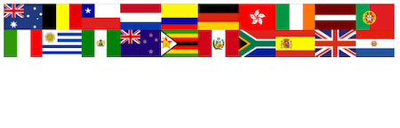
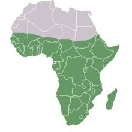

Amongst developing countries or regions in most need of education due to uncontrollable factors, enrollment in primary schools has reached 91% to this date. Enormous progress has been made in order for the UN to be on track for their indicator goals by 2030.

Although progress has been made, there is still a large quantity of children that remain out of school. Specifically, with a majority in Sub Saharan Africa, 57 million primary-aged children currently do not have access to school globally.

Although present around the world, educational issues are mostly impacting those in developing countries as nearly 1 in 4 girls are not attending school.
Globally, there are numerous factors that go towards the prevention of children attending schools, however, mainly, they are most influenced by violence that occurs close to their home as nearly 50% of all out of school children directly live inside conflict affected areas.
Even with schools being free and accessible, there are still cases where children are not getting the correct resources, teachers, or facilities that contribute to healthy learning habits. This contributes to 103 million of the youth worldwide that lacks basic literacy skills. Of that quantity, more than 60% are women.
Similarly, the children and adolescents that do attend schools are not only struggling at literacy. Evidently, 6 out of 10 children attending school are not achieving a minimum proficiency in both reading and math.